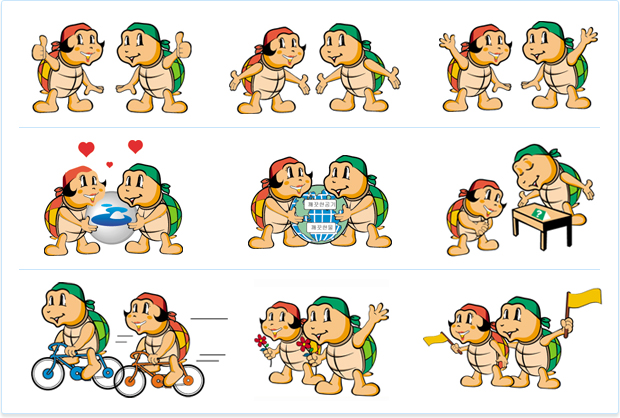

여수 소개
< 여수(麗水) >
아직은 이르지 싶은 봄, 매스컴을 붉게 물들이며 화려하게 소개되는 동백꽃의 고장 여수(麗水)는 전남의 동쪽 경계에 툭 불거져나온 반도이다. 서쪽으로는 순천만을 사이에 두고 전남 고흥반도가 있으며, 동쪽으로는 광양만을 사이에 두고 경남 남해도가 자리잡고 있다.
마스코트

< 구키와구니 >
왼쪽부터 구니와 구키, 구니는 한자의 거북 구(龜)자와 여성스런 호칭의 '니' 구키는 거북 구(龜)자와 어린이의 영어표현인 키드(kid)를 합하여 지은 이름이고 의미는 두마리의 거북이는 한마음, 한뜻으로 노력하는 여수시민을 나타내며, 귀여우면서도 친근함이 떠오르는 어린이의 이미지를 통해 성장과 발전의 도시, 여수를 표현하고 있다.